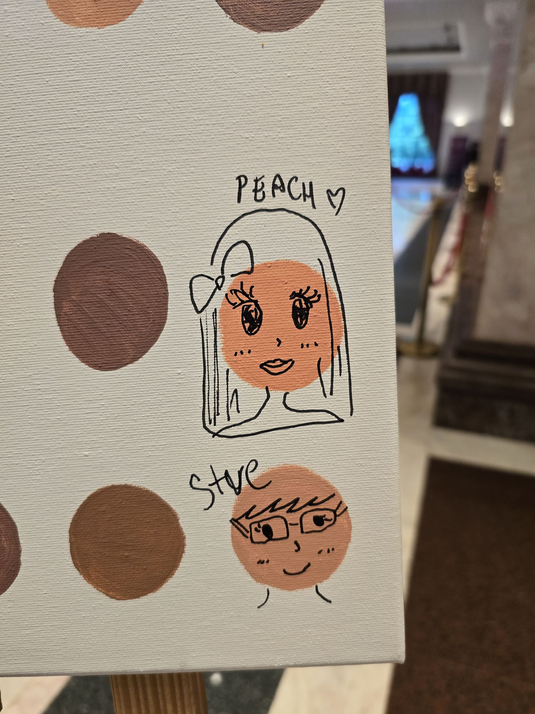
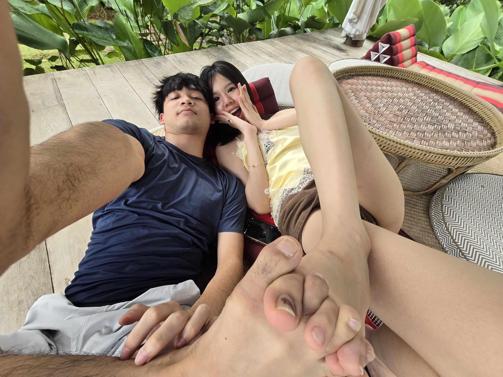
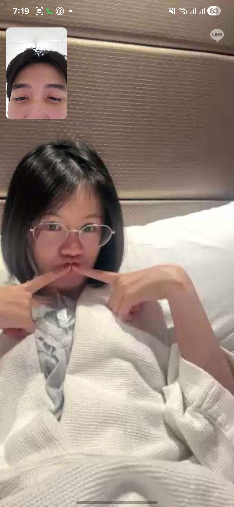
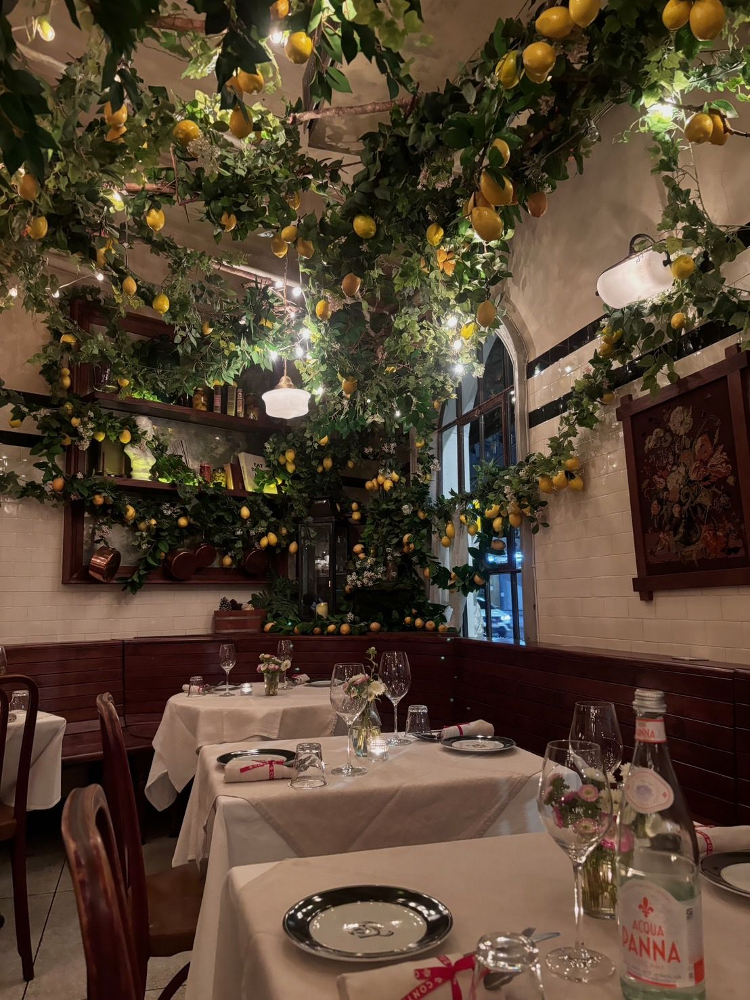
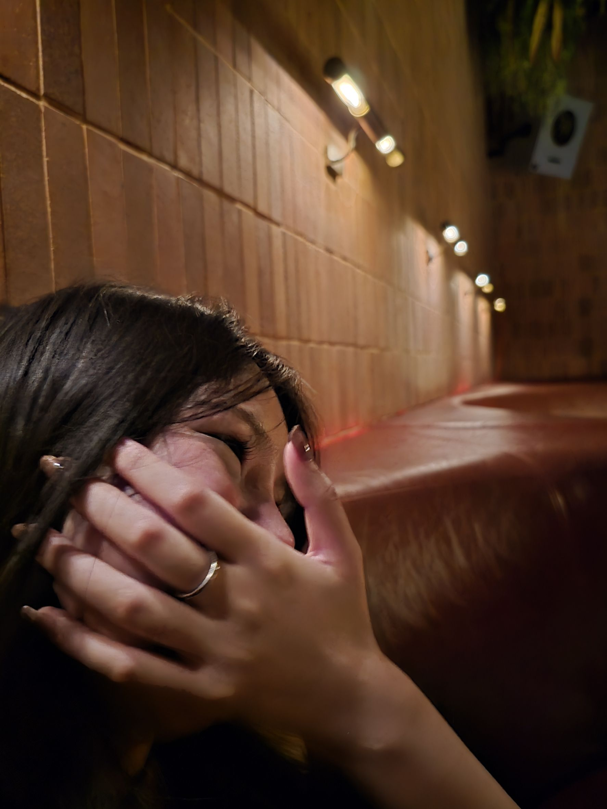
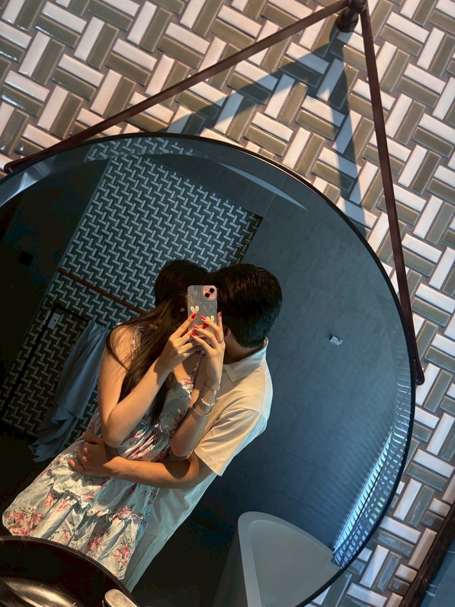
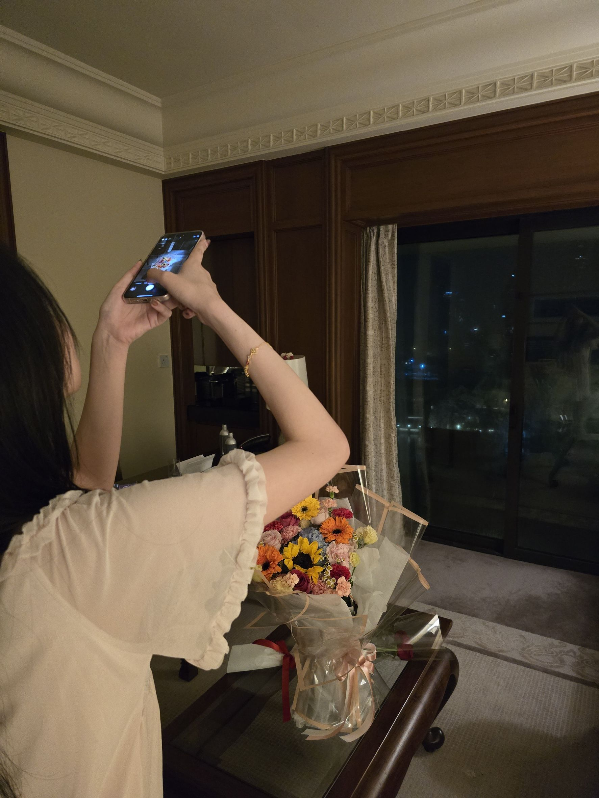

Memory Gallery
A few little pieces of our first year.





Chapter One
365 Days Together
This is not just a website. It is a small corner of the internet made for the memories, laughs, tiny moments, and love we shared in our first year together.

Replace this with the story of how Bibble and Dizzle began.

Write a short memory here. Keep it simple and personal.

Add something funny, cute, or meaningful here.

Thank you for making ordinary days feel special.
A few little pieces of our first year.



One year with you has meant more to me than I can fully explain. Thank you for being my comfort, my happiness, and my favorite person.
I love every little version of us. The sweet moments, the silly moments, the quiet days, and even the difficult ones. I am grateful that I got to spend this first year with you.
I hope this is only the beginning of many more memories together.
Love,
Bibble ❤️
Year 2 starts now.